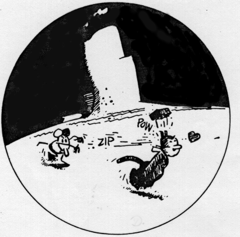
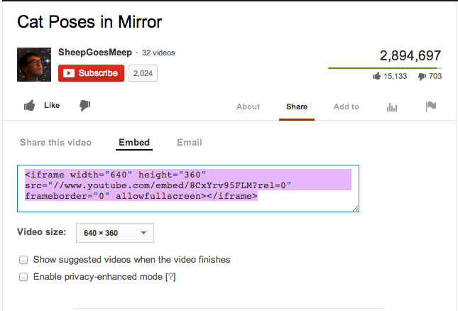
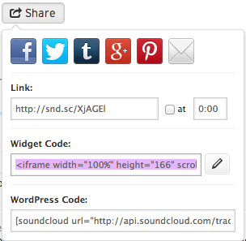

Hyperlinks
Today we're going to look at different ways to style hyperlinks. And some methods for embedding media.
You can wrap a hyperlink around any HTML element. Like an <img> tag.
<a href="#"><img src="img" /></a>
You can add styles to that image.
a img:hover { box-shadow:0 0 10px green }
You can use CSS background position to make rollover images as links.
a {
width:32px;
height:32px;
background: url(img) no-repeat;
background-position: 0 0;
}
a:hover {
background-position: -32px 0px;
}
This will work also just by replacing the image.
a {
background: url(img);
}
a:hover {
background: url(img);
}
You can use CSS to add characters to a link in different pseudo states with :before and :after.
a:before, a:after {
content:"++"
}
You can use CSS borders, or rollover images, to make triangles, or other shapes.
ul {
margin: 0.75em 0;
padding: 0 1em;
list-style: none;
}
li:hover:before {
content: "";
border-color: transparent #111;
border-style: solid;
border-width: 0.35em 0 0.35em 0.45em;
display: block;
height: 0;
width: 0;
left: -1em;
top: 0.9em;
position: relative;
}
Or use a goofy animation.
#menu ul { list-style:none; }
#menu ul li a {
display:block;
width:300px;
height:28px;
background-color:#333;
border-left:5px solid #222;
border-right:5px solid #222;
padding-left:10px;
text-decoration:none;
color:#bfe1f1; }
#menu ul li a:hover {
-moz-transform:rotate(-5deg);
-moz-box-shadow:10px 10px 20px #000000;
-webkit-transform:rotate(-5deg);
-webkit-box-shadow:10px 10px 20px #000000;
transform:rotate(-5deg);
box-shadow:10px 10px 20px #000000;
}
An example using some display changing hover elements.
Embedding media
HTML5 video
<video width="620" controls> <source src="video/cat.mp4" type="video/mp4"> <source src="video/cat.ogg" type="video/ogg"> Your browser doesn't support video : ( </video>
Youtube embeds
<iframe width="640" height="360" src="http://www.youtube.com/embed/-Vp1xJdWrOk?rel=0" frameborder="0" allowfullscreen></iframe>
HTML5 audio
Souncloud embed

SVG
SVG is newly supported by browsers and allows us to embed scalable vector graphics in our websites and add animation and scripts to those graphics. You can embed SVG using the <object>, <img>, <iframe> or <text>. It may require some setup on your server.
<object type="image/svg+xml" data="css/imgs/hr.svg"></object>
SVG files look like this:
<?xml version="1.0" encoding="utf-8"?> <!-- Generator: Adobe Illustrator 16.0.0, SVG Export Plug-In . SVG Version: 6.00 Build 0) --> <!DOCTYPE svg PUBLIC "-//W3C//DTD SVG 1.1//EN" "http://www.w3.org/Graphics/SVG/1.1/DTD/svg11.dtd"> <svg version="1.1" id="Layer_1" xmlns="http://www.w3.org/2000/svg" xmlns:xlink="http://www.w3.org/1999/xlink" x="0px" y="0px" width="600px" height="20px" viewBox="0 0 600 20" enable-background="new 0 0 600 20" xml:space="preserve"> <line fill="none" stroke="#333333" stroke-miterlimit="10" x1="307" y1="10.5" x2="600" y2="10.5"/> <line fill="none" stroke="#333333" stroke-miterlimit="10" x1="0" y1="10.5" x2="293" y2="10.5"/> <text transform="matrix(1 0 0 1 293.8286 17.5371)" fill="#333333" font-family="'ArialMT'" font-size="24">♦</text> </svg>